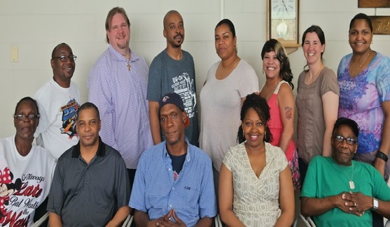

Chicago Health Disparities Center
Inspiring Change
Community Based Participatory Research (CBPR) for African Americans with Serious Mental Illness
People with severe and persistent mental illness such as depression, anxiety, posttraumatic stress disorder, bipolar disorder and schizophrenia often have challenges with accessing health services and staying healthy. Cultural differences and discrimination can create additional health care barriers for African-Americans with serious mental illness. This curriculum was created to address these health care obstacles by involving African Americans with mental illness in all stages of the research process. We strongly believe that this approach makes for stronger research projects: projects that explore important problems and make significant changes in the community.
This study was funded by the Patient-Centered Outcomes Research Institute (PCORI). For more information contact Project Lead, Lindsay Sheehan at lsheehan@iit.edu
Inspiring Change Manual Inspiring Change WorkbookOur Mission
The mission of the Chicago Health Disparities Center (CHDC) is to engage people with serious mental illness in community-based participatory research efforts that will reduce racial healthcare inequities and promote well-being.